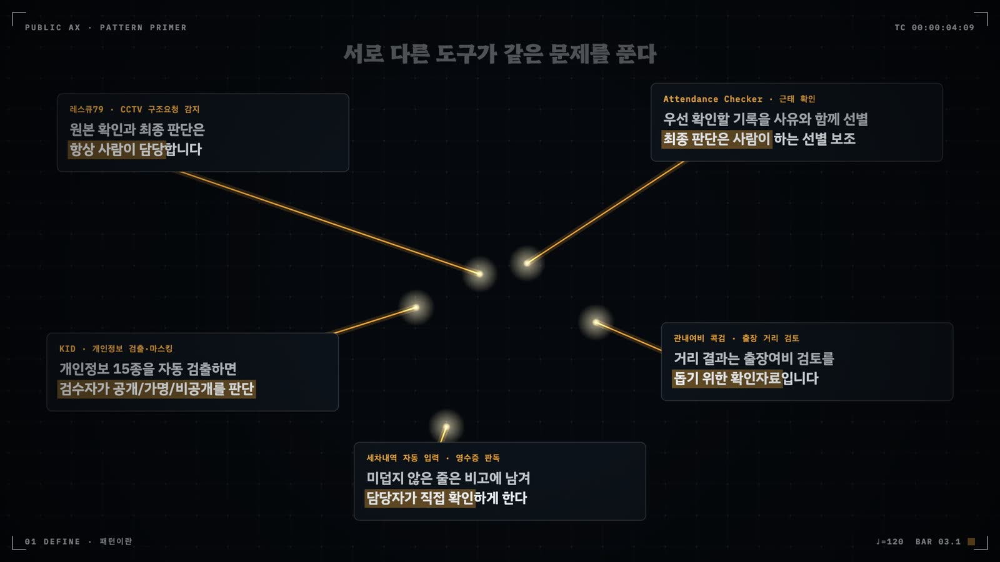
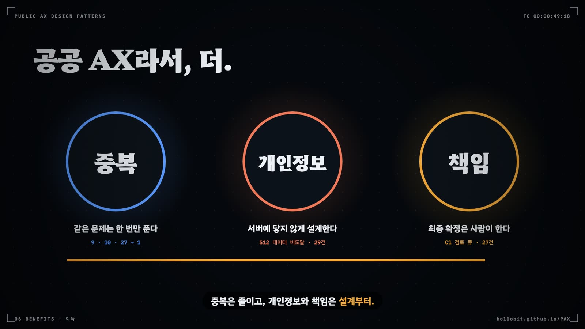

공공 AX와 패턴 언어
공공 AI 과제를 어떤 기술을 썼는지로 읽지 않고, 사람과 AI가 일을 어떻게 나누었는지와 어떤 부품을 어떤 환경 조건 아래 조립했는지로 읽는다. 이 장은 그 읽기 방식과, 그것을 단련한 PAX 사례 564건과 카탈로그의 역사를 소개한다.
- 기술명 분류와 역할 분담 분류의 차이를 예로 설명할 수 있다
- 부품·조립도·배선·패턴 서명이라는 기본 용어를 쓸 수 있다
- PAX 564건의 사례 구분·런타임 AI·주 부품·전이 단계 분포를 말하고, 그것이 카탈로그에 남긴 흔적을 설명할 수 있다
- 카탈로그가 v0.2에서 v0.7.1까지 판마다 무엇을 바꿨는지 요약할 수 있다
- 패턴 언어가 기관에 주는 세 가지 능력(공통 서비스화·참조 구현·결손 진단)을 구분할 수 있다
PAX에 올라온 공공 AI 사례 소개를 열 개쯤 읽으면 비슷한 문장이 반복된다. "생성형 AI 기반 지능형 상담 서비스", "RAG를 활용한 업무 지원 챗봇", "멀티 에이전트 기반 자동화". 문장은 모두 기술명으로 시작한다. 그런데 기술명이 같은 두 사례가 실제로는 전혀 다른 일을 하는 경우가 많다. 기술명이 다른 두 사례가 사실상 같은 구조를 각자 다시 만든 경우도 그만큼 많다. 기술명은 도구가 무엇으로 만들어졌는지를 말해 줄 뿐, 그 도구가 업무를 어떻게 바꾸는지는 말해 주지 않는다.
이 책은 다른 질문으로 과제를 읽는다. 사람과 AI가 일을 어떻게 나누었는가. 그 분담을 받치려고 어떤 공통 부품을 끌어다 썼는가. 그 부품들은 어떤 환경 조건 아래 놓였는가. 이 질문에 같은 어휘로 답하게 해 주는 것이 패턴 언어(pattern language)다. 그 언어는 공직 현장의 사례 원장과 AI·에이전트·보안 패턴 문헌을 겹쳐 읽으며 만들어졌고, 지금까지 여섯 번 고쳐 쓰였다.
1.1 기술명 대신 역할 분담으로 읽기
카탈로그는 스스로를 패턴 언어로 정의하면서, 공공 AI 과제에 던질 질문을 "어떤 기술을 썼나"에서 "어떤 공통 컴포넌트와 서비스를 어떤 환경 조건 아래 조립했나"로 바꾼다. 이 정의를 받아들이면 먼저 분류 기준이 바뀐다. RAG, 에이전트, MCP, 비전 같은 기술명은 분류 기준에서 내려온다. 그 자리에 사람과 AI의 역할 분담이 들어간다.
상용 LLM을 부르는 같은 호출도 쓰임에 따라 갈린다(그림 1.1). AI가 초안을 만들고 담당자가 고쳐서 확정하면 B1코파일럿이다. 근거 문서를 검색해 붙인 답변을 내면 B3지식 접지 상담이다. AI가 스스로 계획을 세우고 도구를 골라 결과를 보며 반복 호출하면 B6에이전트 오케스트레이터에 가까워진다. 호출되는 모델은 같아도 업무 산출물이 만들어지는 모양이 다르고, 그래서 필요한 통제 부품도 다르다. 코파일럿에는 사람이 확정하는 자리(C1검토 큐)가, 지식 접지 상담에는 근거를 보여 주는 자리(F1출처 표시)가, 오케스트레이터에는 도구 권한을 묶는 자리(C8권한 경계·킬스위치)가 먼저 필요하다.
카탈로그는 이 판단을 규칙으로 고정했다. 판정 규칙 R1, 곧 가치 흐름 규칙이다. 처음(v0.5까지)에는 우선순위표가 있었다. 에이전트가 있으면 B6, 아니면 RAG가 있으면 B3 하는 식이다. 그런데 사례를 정독 태깅하자 이 표가 실제 가치 흐름과 어긋난다는 보고가 잇따랐다. 에이전트 기능은 시범으로 붙어 있을 뿐이고 담당자가 받는 핵심 산출물은 코파일럿 초안인 사례가 많았다. v0.6은 우선순위표를 버리고 다음 규칙으로 바꿨다.
B6의 문턱도 같은 이유로 높아졌다. v0.6부터는 복수의 LLM 역할, 도구 호출 루프, AI가 계획과 도구 선택을 맡는 구조가 함께 있어야 B6로 판정한다. 고정된 순서로 단계를 밟는 파이프라인은 B′1순차 파이프라인 배선을 가진 B1이나 B4인식 파이프라인이다. 이 요건 아래 PAX 564건에서 B6를 주 부품으로 판정한 사례는 11건(2.0%)이다. 서비스 유형 5b 데이터 에이전트로 분류된 78건 가운데서도 주 부품이 B6인 사례는 3건뿐이고, 71건은 B0 결정적 도구다. 이름에 에이전트가 붙은 유형과 에이전트가 실제로 업무 산출물을 만드는 사례 사이에는 그만큼 거리가 있다.
역할 분담으로 읽으면 AI 런타임이 없는 도구도 제자리를 얻는다. 공직자가 AI 코딩으로 만들었지만 실행할 때는 모델을 부르지 않는 엑셀 변환기, 지도 시각화 도구, 공공데이터 조회기가 그렇다. 카탈로그는 이것을 B0결정적 도구로 부르고 AX 성숙도의 Ready 부품으로 둔다. "AI가 아니니 제외"라고 버리면 공공 AX에서 가장 많이 재사용되는 부품 공급원을 잃는다.
1.2 부품과 배선도
카탈로그의 정의는 세 출처를 합친 것이다. 고전 디자인 패턴 해설은 패턴을 "반복되는 설계 문제의 전형적 해법이자 상황에 맞게 고쳐 쓰는 청사진"으로 보고, 그 가치를 팀이 더 효율적으로 소통하게 하는 공통 언어에 둔다. Levine의 서비스 디자인 패턴은 패턴을 서비스를 이루는 기본 빌딩블록이라 부른다. 마이크로서비스 패턴은 그 빌딩블록을 게이트웨이·서킷브레이커·사가처럼 배포 가능한 인프라 부품으로 만든 것이다. 카탈로그는 세 관점을 한 문장으로 묶는다.

부품(component)은 카탈로그에 이름과 ID가 붙은 패턴 하나다. 조립도(assembly)는 한 과제가 어떤 부품을 가졌는지의 목록이고, 배선(wiring)은 그 부품들 사이로 데이터와 산출물이 흐르는 순서다. 배선은 A2.4 → B1 → C1 → C4처럼 화살표로 적는다. 한 과제의 조립도와 배선, 환경 조건, 서비스 유형을 한데 모은 요약을 패턴 서명(pattern signature)이라 부른다. 패턴 서명은 주 부품 B 하나, 제어 흐름 원형 B′ 0개 이상, 공통 서비스 A 0개 이상, 운영·보안·상호작용 부품 C·S·F, 서비스 블록 D 하나 또는 둘, 환경 조건 E 다섯 축, 서비스 유형 하나로 이루어진다. 4장에서 가람시 AX팀이 첫 패턴 서명을 직접 쓴다.
Provider로 모으기
부품 관점의 설계 원리는 웹 프런트엔드의 Provider 패턴에서 빌려 왔다. 공유 데이터를 컴포넌트 계층의 중간마다 손으로 내려보내는 대신(prop drilling), 상위에 Provider를 두고 필요한 곳에서 꺼내 쓴다. 카탈로그는 X3 부서마다 챗봇을 prop drilling의 공공판으로 본다. 부서마다 모델 키를 받고, 벡터 저장소를 만들고, 프롬프트를 쓴다. 기반 부품이 부서 수만큼 중복되고, 사본마다 계약·키 관리·로그가 따로 생긴다(그림 1.2 왼쪽).
해법은 기반을 위로 올리는 것이다. 모델 호출은 A2모델 서빙 계층 뒤로 모으고, S1AI 게이트웨이·단일 진입점에서 인증·요청 상한·비용 상한·감사 기록을 한 번에 건다. 부서별 차이는 모델을 따로 두는 대신 A9업무 규범 스킬과 부서 코퍼스(A1데이터 자산 서비스)로 표현한다(그림 1.2 오른쪽). 범정부 AI 공통기반, 공공 깃랩 같은 실물 Provider가 이미 있다면 A3공공 API 제공자로 소비한다.
여덟 계층과 렌즈
부품은 계층으로 나뉜다. 출발점은 고전 GoF 패턴의 생성·구조·행위 세 범주를 옮겨 온 것이었다. 아래층의 A 공통 서비스는 위층이 의존하는 기반이고, B 업무 컴포넌트는 사람과 AI가 일을 나누는 모양을 정한다. C 운영 컴포넌트는 어떤 업무 컴포넌트에도 끼울 수 있는 횡단 부품이다. 이 세 계층은 AX 성숙도의 관문과도 대응한다. 공통 서비스는 Ready 관문, 업무 컴포넌트는 Enabled 관문, 운영 컴포넌트는 First·Native 관문에 걸린다(2장).
그 뒤 판을 거치며 계층이 늘었다. B 안의 배선을 적는 B′ 제어 흐름 원형, 적대자를 전제한 S 보안 패턴, 통제를 이용자 쪽에서 보이게 하는 F 상호작용 패턴이 더해졌다. D 서비스 블록은 부품이라기보다 조립도를 읽는 렌즈다. 산출물이 시민이나 담당자에게 도달하는 접점이 어디인지를 적는다. E 환경 조건은 모든 부품이 답해야 할 다섯 축(배포망·모델 의존·실행 형태·권한 범위·데이터 등급)으로, 부품 목록에는 들지 않는다. 같은 부품이라도 폐쇄망이나 시스템 쓰기 권한 아래서는 함께 끼워야 할 부품이 달라진다. 피해야 할 조립은 X 안티패턴으로 따로 모았다. 그림 1.3이 이 배치를 보여 준다.
표 1.1에 계층마다 디렉터리에 오른 항목 수와 그 계층을 다루는 장을 모았다.
| 계층 | 이름 | 한 줄 정의 | 항목 수 | 다루는 장 |
|---|---|---|---|---|
| A | 공통 서비스 | 업무 컴포넌트가 딛고 서는 기반. Provider로 제공한다. | 19 | 7장 |
| B | 업무 컴포넌트 | 사람과 AI가 일을 나누는 모양. 과제마다 주 부품 하나. | 9 | 5장 |
| B′ | 제어 흐름 원형 | B 부품 안의 배선을 적는 원형. | 11 | 6장 |
| C | 운영 컴포넌트 | 검토·분기·롤백·기록·폴백 같은 횡단 통제. 운영 증거가 있을 때만 present. | 10 | 8장 |
| S | 보안 패턴 | 적대자를 전제한 횡단 부품. | 13 | 9장 |
| F | 상호작용 패턴 | C의 통제를 이용자 쪽에서 보이게 하는 면. | 11 | 10장 |
| D | 서비스 블록 | 시민·담당자의 동작 단위. 조립도를 읽는 렌즈. | 18 | 11장 |
| E | 환경 조건 | 모든 부품이 답하는 다섯 축. 디렉터리 항목이 아니라 조립의 전제. | 5축 | 4장 |
| X | 안티패턴 | 피해야 할 조립. | 16 | 14장 |
| 합계(E 제외) | 107 | |||
1.3 PAX 공공 AX 사례 아카이브 564건
카탈로그는 PAX 공공 AX 사례 아카이브(hollobit.github.io/PAX)를 읽으며 만들고 고쳤다. PAX는 공직자 개인과 커뮤니티가 오픈채팅·스레드 같은 곳에서 자발적으로 공유한 도구와, 기관이 공개한 AI 활용 사례를 한 원장에 모은다. 2026년 10월 16일 갱신 기준으로 564건이다. 원장의 사례 구분으로 보면 개인 개발이 334건(59.2%)으로 가장 많고, 커뮤니티 104건(18.4%)과 기관 공식 55건(9.8%)이 뒤를 잇는다. 나머지 71건(12.6%)은 민간이나 해외 사례를 견줄 거리로 실어 둔 참고 사례다. 만든 곳을 기관 유형으로 나누면 공직 개인이 321건이고, 중앙행정기관 23건, 공공기관 19건, 기초지자체 12건, 광역지자체 10건, 지방의회 9건, 교육기관 5건이다.
도구의 모양은 제각각이다. 4축 평가의 도구 유형으로는 실행 파일·스크립트 같은 도구·기타가 130건, 웹 서비스 111건, MCP 서버·도구 92건, 대시보드·분석 49건, 데스크톱 도구 43건, AI 스킬·에이전트 40건 순이다. 더 크게 갈리는 것은 런타임 AI의 유무다. 패턴 태깅의 모델 의존 조건으로 보면 564건 중 298건(52.8%)은 실행할 때 LLM을 부르지 않는다. LLM을 부르는 사례도 해외 상용 API에 묶인 것(64건)보다 이용자가 모델을 골라 끼우는 모델 중립 구성(90건)이 많다. 해외 오픈웨이트 모델을 로컬에서 돌리는 사례가 30건, 국산 모델을 쓰는 사례가 9건이다. 태깅의 네트워크 요건으로는 인터넷 없이 로컬에서 끝나는 사례가 129건, 폐쇄망에서도 돌아가는 사례가 52건이다.
주 부품 분포는 이 성격을 그대로 비춘다(그림 1.4). 결정적 도구 B0가 396건(70.2%)을 차지하고, 코파일럿 B1이 77건(13.7%)으로 뒤를 잇는다. 나머지 일곱 부품을 다 합쳐도 91건이다. 주 부품은 성숙도 단계를 가르는 첫 신호이기도 하다. B0를 주 부품으로 둔 396건 중 329건이 AI-Ready이고, B1을 둔 77건 중 61건이 AI-Enabled다.
표 1.2는 564건의 성격을 부품 바깥까지 넓혀 정리한다. 4축 평가의 AX 단계로는 AI-Ready가 362건(64.2%), AI-Enabled가 171건(30.3%)이고, AI-First는 5건에 그친다. 통제 부품 쪽은 비어 있다. 운영 부품(C)을 하나도 확인할 수 없는 사례가 431건(76.4%), 보안 부품(S)이 없는 사례가 516건(91.5%)이다. 태깅의 전이 단계로는 만든 사람 혼자 쓰는 개인 사용이 361건(64.0%)이고, 다른 기관이 가져다 쓴 사례는 7건, 범정부에 탑재된 사례는 3건이다. 기반 부품은 반대로 풍부하다. A3공공 API 제공자가 156건, A10문서 형식 어댑터가 136건, A8MCP 서버·호스트가 95건, A9업무 규범 스킬이 54건에서 쓰였다. PAX는 성숙도 사다리의 Ready 칸에 넓게 서 있다. 재사용할 기반 부품은 넘치지만, 그것을 업무 산출물과 통제 부품으로 엮은 조립은 아직 드물다.
| 항목 | 분포 |
|---|---|
| 사례 구분(원장) | 개인 개발 334 (59.2%) · 커뮤니티 104 (18.4%) · 참고 71 (12.6%) · 기관 공식 55 (9.8%) |
| 기관 유형(원장) | 공직 개인 319 · 커뮤니티 104 · 민간(참고) 45 · 중앙행정기관 23 · 공공기관 19 · 해외(참고) 13 · 기초지자체 11 · 광역지자체 9 · 지방의회 9 · 교육기관 5 |
| 도구 유형(4축 평가) | 도구·기타 129 · 웹 서비스 107 · MCP 서버·도구 91 · 대시보드·분석 49 · 데스크톱 도구 43 · AI 스킬·에이전트 40 · 플랫폼·포털 37 · 오픈소스 도구 31 · 도입·정책 18 · 브라우저 확장 12 |
| 런타임 AI(태깅 모델 의존) | LLM 없음 298 (52.8%) · 모델 중립 90 · 해외 상용 API 64 · 해외 오픈웨이트(로컬) 30 · LLM(모델 미상) 22 · 혼합 17 · 국산 모델 9 · 미확인 34 |
| 망 요건(태깅 네트워크 요건) | 인터넷 필수 254 · 로컬 완결 129 · 폐쇄망 가능 52 · 미확인 122 |
| 권한 범위(태깅) | P0 읽기 전용 239 · P1 산출물 생성 292 · P2 시스템 쓰기 26 |
| 최다 주 부품 | B0 396 (70.2%) · B1 77 (13.7%) · B3 32 (5.7%) |
| 최다 서비스 유형 | 8 취합·변환 자동화 109 · 0 기타 94 · 5b 데이터 에이전트 77 |
| 최다 업무 분야(원장) | 데이터·통계 126 · 문서·기안 106 · 공통·범용 95 |
| AX 단계(4축 평가) | AI-Ready 362 (64.2%) · AI-Enabled 171 (30.3%) · AX 단계 외 25 · AI-First 5 · AI-Native 계획 1 |
| 통제 부품 없음 | 운영(C) 431 (76.4%) · 보안(S) 516 (91.5%) · 상호작용(F) 349 (61.9%). present·implemented 기준 |
| 전이 단계(태깅) | 개인 사용 361 (64.0%) · 부서 공유 115 · 기관 공식 57 · 구현·미배포 18 · 타 기관 재사용 7 · 범정부 탑재 3 · 미착수 3 |
PAX의 판정은 보수적이다. 공개된 소스와 화면, 게시글만으로 판정하고, 근거가 없으면 "미확인"으로 둔다. 564건 가운데 코드·도구·저장소를 직접 확인한 근거(E1)가 391건이고, 운영 중인 공식 주소나 보도까지 확인된 사례(E3)는 20건이다. 그래서 "운영 부품 없음 76.4%"는 운영 부품이 실제로 없다는 뜻이기보다, 공개된 서술에서 확인되지 않았다는 뜻으로 읽어야 한다. 이 구분은 15장과 16장에서 다시 나온다. 이 책의 패턴 프로필에 실린 PAX 사용 사례 수도 같은 564건 태깅에서 나왔다. B는 주 부품이나 보조 부품으로, C·S·F는 present나 implemented로 태깅된 사례를 센다.
1.4 카탈로그의 진화: v0.2에서 v0.7.1까지
지금의 카탈로그는 여섯 번 고쳐 쓴 결과다(그림 1.5). 판마다 바뀐 이유가 분명하다. 앞쪽 네 판(v0.2~v0.5)은 PAX 사례나 새 문헌을 겹쳐 보고 빠진 부품과 형식을 더했다. 뒤쪽 세 판(v0.6~v0.7.1)은 카탈로그를 사례 전수에 적용한 뒤 태깅 과정에서 나온 피드백으로 규칙을 고쳤다.
v0.2는 공통 서비스·업무 컴포넌트·운영 컴포넌트 세 계층과 서비스 블록 렌즈를 골격으로 세웠다. v0.3은 PAX 사례로 v0.2를 검증했다. 구멍은 세 군데에서 드러났다. 폐쇄망·로컬 LLM·MCP·권한 범위가 부품 안에 숨어 있었다. 공공데이터 MCP 서버, 업무 규범 스킬, HWPX·엑셀 어댑터, 온나라를 덧입힌 브라우저 확장, 런타임 AI가 없는 도구처럼 현장 자생 도구가 쓰는 부품은 아예 빠져 있었다. PAX 원칙 "공공에서는 자율성보다 통제"를 담을 통제 부품도 하나 모자랐다. 그래서 E 환경 조건 계층과 A8MCP 서버·호스트, A9업무 규범 스킬, A10문서 형식 어댑터, B0결정적 도구, B8레거시 오버레이, C8권한 경계·킬스위치가 들어왔다.
v0.4는 AI·에이전트 디자인 패턴 문헌 10종을 겹쳤다. 부품 목록은 있었지만 패턴을 패턴답게 만드는 형식이 없었다. 이름·문제·해법·결과라는 최소 템플릿, 사용례 세 건 이상이면 확립이라는 등재 규칙(Rule of Three), 다섯 관점의 분류 뷰가 이때 정해졌다. 여러 에이전트 카탈로그의 교집합에서 B′ 제어 흐름 원형이, AI UX 패턴에서 F 상호작용 계층이, 평가 문헌에서 C9평가 세트·회귀시험이 나왔다. v0.5는 보안 패턴 문헌 5종으로 S 계층을 세웠다. v0.4까지의 C 계층은 실수와 장애를 막는 통제였고, 적대자는 염두에 두지 않았기 때문이다.
v0.6부터 성격이 바뀐다. 카탈로그를 사례 전수에 정독 태깅으로 적용했다. 태깅 지침은 "카탈로그가 맞지 않는 지점을 반드시 적어라"였다. 앞에서 본 R1 가치 흐름 규칙, present·implemented·planned 구현 상태 3단계, B′9결정론 판정 게이트, A2.5비LLM 학습 모델, A11액추에이션·현장 통지 어댑터가 모두 이 태깅 피드백을 반영해 들어왔다. v0.7은 v0.6 규칙으로 재태깅하고 PAX를 처음으로 전수 정독 태깅했다(당시 459건). v0.6 규칙으로 사례를 다시 정독 태깅하며 나온 피드백으로 R10~R17을 개정했다. v0.7.1은 태깅이 끝난 뒤 추가로 보고된 잔여 피드백을 R18~R28로 문서에 반영했다. 스키마와 검증기에는 아직 적용되지 않았다. 이 책 2판은 원장이 564건으로 늘어난 뒤, 기존 481건에 새로 들어온 83건을 더해 564건 전수를 v0.7.1 규칙으로 태깅한 결과를 쓴다.
표 1.3은 판마다 무엇이 개정을 촉발했고 무엇을 바꿨는지를 한 줄로 줄인 것이다.
| 판 | 자극 | 대표 결정 |
|---|---|---|
| v0.2 | 첫 골격 | A·B·C 세 계층, D 서비스 블록 렌즈 |
| v0.3 | PAX 사례로 검증 | E 환경 조건 신설, 부품 6개 추가, 재사용 척도를 전이 5단계로 교체 |
| v0.4 | AI·에이전트 패턴 문헌 10종 | 패턴 템플릿·Rule of Three·분류 뷰, B′·F 계층, C9 |
| v0.5 | 보안 패턴 문헌 5종 | S 계층, 위협 × 부품 매트릭스, 신뢰 불가 입력 규칙 |
| v0.6 | 전수 정독 태깅 피드백 | R1 가치 흐름, B6 요건, 구현 상태 3단계, B′9·A2.5·A11·A12·F9~F11 |
| v0.7 | v0.6 규칙으로 사례를 다시 정독 태깅하며 나온 피드백 | R10~R17 (필수 부품 대안, A2.0~A2.6, B′10, A11a/b 분리 등) |
| v0.7.1 | 잔여 피드백 | R18~R28 (5a·5b·2a·2b 세분 등, 문서만 개정) |
카탈로그는 아직 자라는 중이다. 판마다 사례가 카탈로그의 틀린 곳을 드러냈고, 카탈로그는 그 지점을 규칙으로 고쳤다. 필수 부품 결손으로 잡힌 것 가운데 일부는 규칙이 지나치게 요구해서 생긴 것이었다. 그때 고쳐야 할 쪽은 카탈로그였고, v0.7은 필수 부품에 대안을 허용하는 규칙으로 이를 고쳤다. 이 책이 15장에서 태깅·검증·피드백 루프를 따로 다루는 까닭이 여기에 있다. 기관이 자기 과제를 태깅하다 만나는 어긋남도 같은 루프를 타고 다음 판에 들어간다.
1.5 패턴이 주는 세 가지 능력
과제를 부품의 조립도로 읽으면 세 가지 일이 가능해진다(그림 1.6). 카탈로그를 만든 이유도 이 셋에 있다.
공통 서비스화. 같은 부품을 각자 만든 과제들을 찾아 공통 서비스로 올린다. 문서 형식 어댑터를 따로 만든 과제가 여럿이면 그 어댑터는 기관이나 범정부 수준의 A 부품이 될 후보다. 부품 이름이 없으면 이 중복은 보이지 않는다. 과제마다 "HWP 파싱 모듈 개발"이라고 적고, 저마다 처음 만드는 것이라 여기기 때문이다.
참조 구현. 잘 만든 부품을 참조 구현으로 지정해 다른 기관이 가져다 쓰게 한다. PAX 564건 태깅에서 참조 구현 후보로 가장 많이 지목된 부품은 F7한계·신뢰도 안내(17건), A10문서 형식 어댑터(14건), S12데이터 비도달 설계(11건), B′9결정론 판정 게이트(9건), C9평가 세트·회귀시험(9건)이었다. 업무를 가리지 않고 끼울 수 있는 부품일수록 다른 기관이 가져가기 쉽다. 이 후보를 모은 것이 참조 구현 레지스트리(15장)다.
결손 진단. 어떤 부품이 빠져서 AX 단계가 멈췄는지를 과제마다 같은 언어로 말한다. "고도화가 필요하다"는 진단은 다음 행동을 알려 주지 않는다. "B1은 있는데 C1 검토 큐가 운영 기록 없이 planned에 머물러 있다"는 진단은 다음에 무엇을 끼울지 알려 준다. 서비스 유형마다 필수 부품이 정해져 있어서, 검증기는 유형별 결손을 자동으로 적는다. PAX 564건에서 가장 많이 빠진 필수 부품은 C5 가드레일 필터(178건), C1 검토 큐(108건), C8 권한 경계·킬스위치(107건), C9 평가 세트·회귀시험(102건), F1 출처 표시(84건)였다.
1.6 흔한 오해
패턴 언어를 처음 접하는 기관에서는 다음과 같은 오해가 자주 나온다.

- 기술명을 부품으로 착각한다. RAG·MCP·에이전트는 그 자체로 패턴이 아니다. 카탈로그의 등재 규칙은 이름·동기·해법·결과가 없는 항목을 패턴으로 세지 않으며, 기술명만 있는 항목도 등재하지 않는다. MCP는 부품(A8)이자 실행 형태 조건(E3)이고, RAG는 B3 안의 검색 단계이며, 온프레미스는 조건(E1·E2)이다.
- 부품이 많을수록 성숙하다고 여긴다. 부품 수로는 성숙도를 잴 수 없다. 운영 부품은 운영 증거가 있을 때만 present로 센다. 설계서에 적힌 C 부품 열 개보다 운영 중에 한 번이라도 작동 기록이 남은 C1 하나가 무겁다. X8MCP 서버 개수 세기와 X2설계도만 있는 운영이 이 오해의 안티패턴이다.
- 런타임 AI가 없으면 AX가 아니라고 본다. PAX 564건 중 298건(52.8%)은 태깅의 모델 의존 조건으로 런타임에 LLM을 부르지 않는다. 카탈로그는 이것을 B0로 이름 붙여 Ready 부품으로 센다. 다만 바이브 코딩으로 만들었다는 사실만으로 Enabled가 되지는 않는다.
- 카탈로그를 평가표로만 쓴다. 패턴 서명은 채점 도구이기 전에 설계 도구다. 과제를 시작할 때 주 부품을 고르고 환경 조건에 맞는 의존 부품을 끼우는 순서(12장)가 먼저다.
핵심 정리
- 카탈로그는 공공 AI 과제를 "어떤 공통 컴포넌트와 서비스를 어떤 환경 조건 아래 조립했나"로 읽는 패턴 언어다.
- 분류 기준은 사람과 AI의 역할 분담이고, 주 부품은 사람이나 국민이 최종으로 받는 산출물을 만드는 부품이다(R1).
- 부품은 A·B·B′·C·S·F·D 일곱 계층과 X 안티패턴으로 나뉘고, E 환경 조건 다섯 축이 전체를 감싼다. 디렉터리 항목은 107개다.
- 한 과제의 요약은 패턴 서명이다. 주 부품 B 하나에 B′·A·C·S·F·D·E·서비스 유형이 붙는다.
- PAX 564건 가운데 개인·커뮤니티 사례가 77.7%, 주 부품 B0가 70.2%다. 사례는 AI-Ready에 몰려 있고, 기반 부품은 풍부하지만 운영·보안 부품은 대부분 확인되지 않는다.
- 카탈로그는 v0.2에서 v0.7.1까지 PAX 사례·문헌·태깅 피드백으로 여섯 번 고쳐졌다. 맞지 않는 지점은 다음 판의 재료다.
- 패턴 언어가 주는 능력은 공통 서비스화, 참조 구현, 결손 진단 세 가지다.
© 2026 전종홍. 이 책은 CC BY-NC-SA 4.0 (저작자표시-비영리-동일조건변경허락) 라이선스를 따릅니다. 저작자를 밝히고 비영리 목적으로만 쓸 수 있으며, 고치거나 덧붙인 저작물은 같은 조건으로 배포해야 합니다.